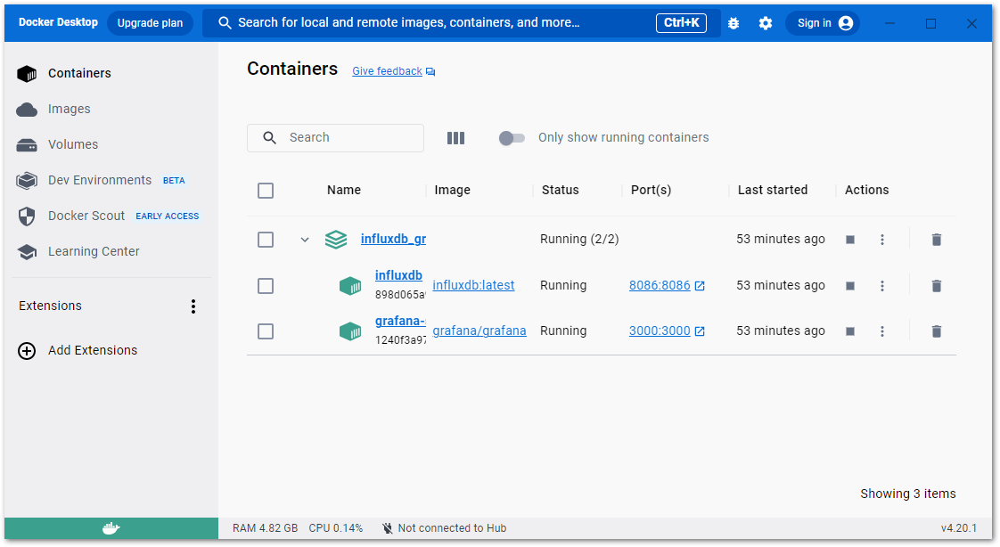

InfluxDBとGrafanaのセットアップ（Docker compose）#
IPCとは別の専用サーバへインストールすることで、InfluxDBだけではなく、Grafanaと呼ばれる可視化とダッシュボードに特化したWEBアプリケーションの両方をインストール可能になります。InfluxDBにも便利なグラフ表示機能はありますが、Grafanaを使うことでより多彩な可視化表示が可能になり、且つ、プラグインによる拡張が可能です。これにより、より快適な分析やダッシュボード機能が利用可能になります。
複数のサーバを起動する場合は、個々のアプリケーションを個別にインストールするのではなく、Docker composeを用いて導入すると便利です。
この章では、GrafanaとInfluxDBをdocker composeを用いてインストールする方法を説明します。
Docker Desktopのインストール#
WSL2を有効にします。Windowsの再起動が必要です。
Power shellを管理者権限で起動し、次のコマンドを入力します。
PS> wsl --install
次の通りインストールが進みます。完了したらPCを再起動してください。
PS> wsl --install インストール中: 仮想マシン プラットフォーム 仮想マシン プラットフォーム はインストールされました。 インストール中: Linux 用 Windows サブシステム Linux 用 Windows サブシステム はインストールされました。 インストール中: Linux 用 Windows サブシステム Linux 用 Windows サブシステム はインストールされました。 インストール中: Ubuntu Ubuntu はインストールされました。 要求された操作は正常に終了しました。変更を有効にするには、システムを再起動する必要があります。
PC再起動後、Docker Desktopを下記からダウンロードして、インストールを行います。
https://docs.docker.com/desktop/install/windows-install/
インストールを開始すると次の画面が現われます。
Use WSL 2 Instead of Hyper-Vには必ずチェックを居sれ手OKボタンを押してください。インストールが開始します。インストールあと、デスクトップに作成されたアイコンからDocker Desktopを実行します。
初回、下記の通り非商用用途に限り無償である旨メッセージが現われます。同意される場合は、Acceptボタンを押します。
警告
本サーバを製品に搭載されるなど商用利用の場合はDocker社と有償契約を結び、ライセンス条項にしたがって正しくご使用ください。
続いて、アンケート画面になります。回答いただくかSKIPボタンを押してください。

{kind=link}
{kind=link}
{kind=link}
{kind=link}
InfluxDBとGrafanaのインストール#
まず空のフォルダを作成し、次の2つのテキストファイルを作成します。メモ帳などで下記をコピーペーストし、それぞれ冒頭に記載している名前のファイル名で保存してください。
なお、 .env ファイルの内容は、初期設定に関する設定項目です。それぞれコメントに従い適切な値に書き換えてください。
1INFLUX_URL="http://localhost:8086" # このまま変更無し
2INFLUXDB_USERNAME="admin" # InfluxDBの初期ログインユーザ名
3INFLUXDB_PASSWORD="beckhoff" # InfluxDBの初期ログインパスワード
4INFLUXDB_ORG="your.companies.domain" # 組織名。貴社のドメイン名を設定してください
5INFLUXDB_BUCKET="machine_data" # 任意のBucket名を定義します。このままでも可。
6INFLUXDB_RETENTION="1w" # 任意のデータ保持期間を設定します。この例は1w(一週間)です。
7GRAFANA_USERNAME="admin" # Grafanaの初期ログインユーザ名
8GRAFANA_PASSWORD="beckhoff" # Grafanaの初期ログインパスワード
1version: '3.6'
2services:
3 influxdb:
4 image: influxdb:latest
5 container_name: influxdb
6 restart: always
7 environment:
8 - INFLUX_HOST=${INFLUX_URL}
9 - DOCKER_INFLUXDB_INIT_MODE=setup
10 - DOCKER_INFLUXDB_INIT_USERNAME=${INFLUXDB_USERNAME}
11 - DOCKER_INFLUXDB_INIT_PASSWORD=${INFLUXDB_PASSWORD}
12 - DOCKER_INFLUXDB_INIT_ORG=${INFLUXDB_ORG}
13 - DOCKER_INFLUXDB_INIT_BUCKET=${INFLUXDB_BUCKET}
14 - DOCKER_INFLUXDB_INIT_RETENTION=${INFLUXDB_RETENTION}
15 ports:
16 - '8086:8086'
17 volumes:
18 - ./influxdb_data/data:/var/lib/influxdb2
19 - ./influxdb_data/etc:/etc/influxdb2
20 grafana:
21 image: grafana/grafana
22 container_name: grafana-server
23 restart: always
24 depends_on:
25 - influxdb
26 environment:
27 - GF_SECURITY_ADMIN_USER=${GRAFANA_USERNAME}
28 - GF_SECURITY_ADMIN_PASSWORD=${GRAFANA_PASSWORD}
29 - GF_INSTALL_PLUGINS=
30 links:
31 - influxdb
32 ports:
33 - '3000:3000'
34 volumes:
35 - ./grafana_data:/var/lib/grafana
36volumes:
37 grafana_data: {}
38 influxdb_data: {}
上記2ファイルが存在するディレクトリでユーザ権限でPower shellを開き、以下のコマンドを実行します。
PS> docker compose up -d
インターネットから自動的にさまざまなコンポーネントをダウンロードし、インストール、および初期設定が自動的に実行されます。
PS> docker compose up -d
[+] Running 0/2
- grafana Pulling
- influxdb Pulling
:
:
途中でWindows Firewallのポート開放許可を確認するダイアログが出現したら、許可を行ってください。
実行が完了したら、次図の通りDocker desktop上の管理画面において、二つのコンポーネントが稼働していることがわかります。

外部のPCからブラウザより http://<InfluxDBをインストールしたサーバIPアドレス>:8086/ にアクセスして、InfluxDBの管理画面へログインします。.env ファイルで設定したユーザ名、パスワードでログインできることを確かめてください。